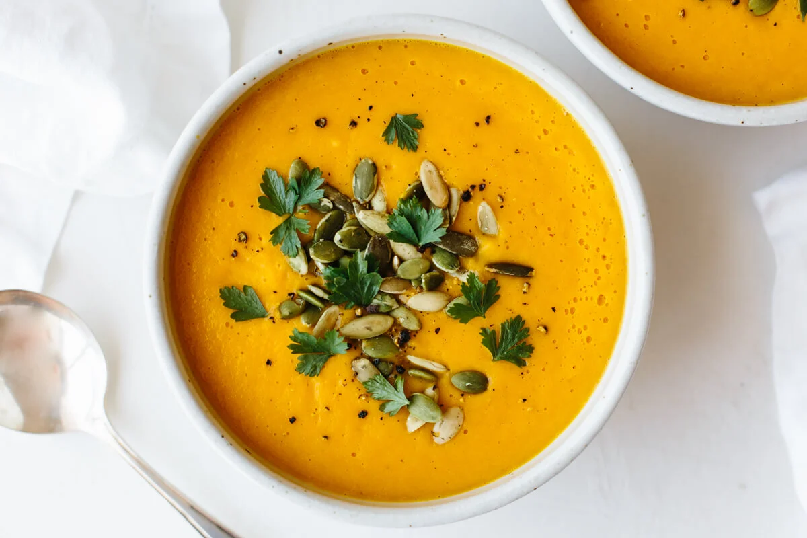

Butternut Squash Soup

A photo of butternut squash soup
Description
A thick, rich butternut squash soup
Ingredients
- 2 tablespoons butter
- 1 small onion. chopped
- 1 stalk celery, chopped
- 1 medium carrot
- 2 medium potatoes
- 1 medium butternut squash - peeled, seeded, and cubed
- 1 (32 fluid ounce) container chicken stock
- salt and freshly ground black pepper to taste
Steps
- Melt butter in a large pot over medium heat, and cook onion, celery, carrot, potatoes, and squash until lightly browned, about 5 minutes. Pour in enough chicken stock to cover vegetables.
- Bring to a boil over medium-high heat. Reduce heat to low, cover pot, and simmer until all vegetables are tender, about 40 minutes.
- Transfer soup to a blender and process until smooth. Return to the pot and mix in any remaining stock to reach desired consistency. Season with salt and pepper.
- Serve